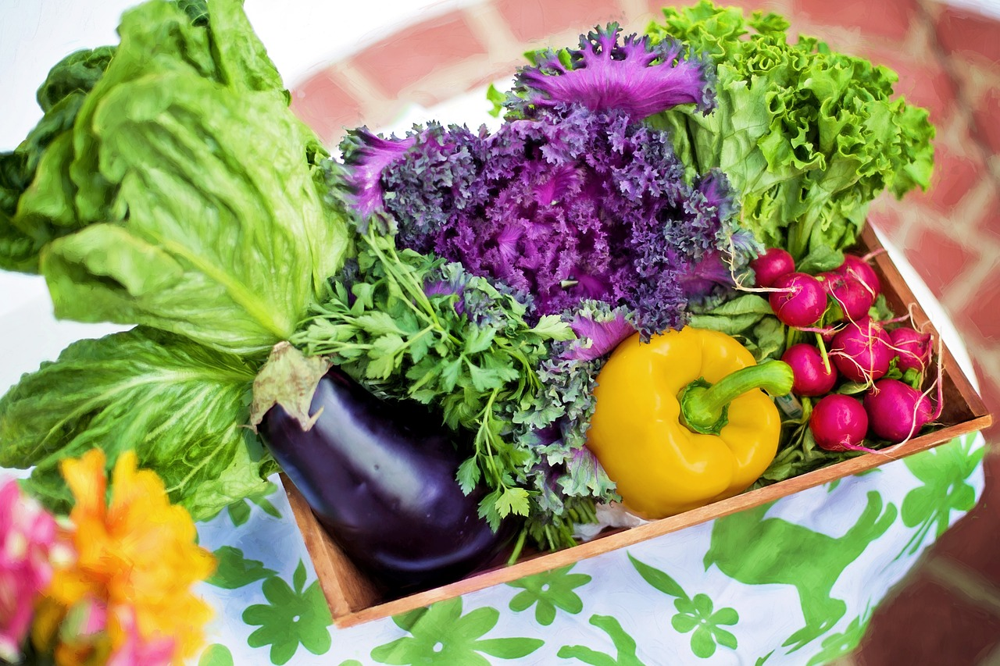

Why Eat Vegetables?

Vegetables are a natural way to gain many vitamins and minerals that your body needs to survive. This includes ones commonly touted as vitamin C all the way down to ones unheard of like vitamin A, B6, and so on. In comparison to fruits, vegetables are often also high in minerals such as calcium and iron. Some, like lentils, are even a meat substitute, providing as much protein as meat!
Vegetables have a significantly higher amount of dietary fiber than any other food group, even fruits! Dietary fiber is fiber that comes from eating the edible parts of the vegetables; this is often referred to as just “fiber” in context of food. Dietary fiber is important as your body needs it to scrub the food buildup on the inside of your intestines to make it easier for your body to absorb the nutrients and food molecules it needs to run more efficiently from the food.
Because of this there are often a lot of benefits from eating vegetables. It makes your body healthier both physically and aesthetically, helps to reduce the risk of heart disease and hypertension (two of the biggest killers in the US), reduces acne, and helps people to lose weight as it substitutes foods much higher in calories, fats, and sodium. Due to the proper nutrition from vegetables, your body will be able to prevent and fight off most diseases much more easily as well!
In comparison to fruits, vegetables are often more readily available in their fresh forms than fruits, with some able to last up to a month in shelf life. It is often recommended that whenever fruits are not available for consumption, vegetables are often a nutritional substitute - however, what type of nutrition and what vitamins and minerals each one gives differs greatly (compared to fruits, where they are mostly similar) so it is important to eat a wide variety of vegetables!